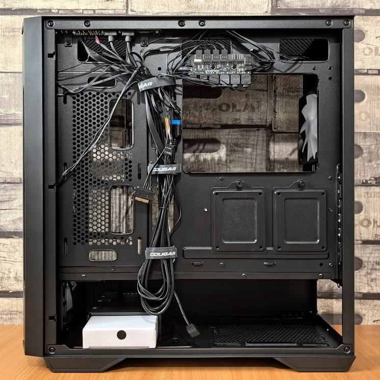

<!DOCTYPE html>
<html lang="en"></html>
<head>
    <meta charset="UTF-8">
    <meta name="viewport" content="width=device-width, initial-scale=1.0">
    <title>Document</title>
    <link rel="stylesheet" href="style2.css">
</head>
<body>
    
  <div id="wrapper">

        <header>

          <a href="index.html"> 
            <button type="button" class="block">  
              
            </button>
          </a>

        </header>
        <nav>
        <h2>

            <div class="dropdown">
              <button class="dropbtn">Meny</button>
              <div class="dropdown-content">
                <a href="chassi.html">Chassi</a>
                <a href="cpu.html">CPU</a>
                <a href="grafikkort.html">Grafikkort</a>
                <a href="hårddisk.html">Hårddisk</a>
                <a href="moderkort.html">Moderkort</a>
                <a href="nätaggregat.html">Nätaggregat</a>
                <a href="ram-minne.html">Ram Minne</a>
              </div>
            </div>

            <div class="dropdown">
              <button class="dropbtn2">Mycket skit</button>
              <div class="dropdown-content">
                Mycket för syns skull
              </div>
            </div>

            <div class="dropdown">
              <button class="dropbtn3">Mer skit</button>
              <div class="dropdown-content">
                Mer för syns skull
              </div>
            </div>

            <div class="dropdown">
              <button class="dropbtn4">Mest skit</button>
              <div class="dropdown-content">
                Mest för syns skull
              </div>
            </div>

         </h2>
        </nav>  
        <aside>aside</aside>
        <main>
         <h3> <p>
            Chassit är det som håller ihop datorn. Den ser till att alla komponenter sitter och är ett skydd 
            till dem. Chassit måste vara anpassat till vilket moderkort du har på datorn. Är moderkortet för
            stort för den inte plats i chassit, då måste du köpa ett helt nytt chassi eller moderkort. Är 
            moderkortet för litet, så är det samma sak.
            Den förser datornmed uttag för bland annat USB pch HDMI kablar.  
          </p>
          <p>
En viktig sak att tänka på när man väljer chassi är luftflödet i den. Ett dåligt luftflöde i 
chassit leder till att komponenterna överhettas. En till sak med luftflödet är att du måste ha
fläktar. Har du ett bra luftflöde kan du ha färre fläktar i datorn. Har du dåligt luftfölde behövs
mycket mer fläktar för att kyla allting på ett bra sätt. Har man vattenkylning är luftflödet mindre
viktigt, men det är alltid bra att tänka på när man köper en ny dator.
          </p>
          <p>
Moderkortet är oftast fastskruvat på sidan av chassit. Baksidan är oftast fylld av olika uttag. Några mer
"spaceiga" och moderna chassin har oftast en ruta så man kan se komponenterna. När man har den rutan är den
oftast kombinerad med rgb-ljus. Det är bara ljus och ljusslingor som dekorerar datorn. Ofta är det bländande 
om man ska spela, så många har stäng av det även om man har tillgång till rgb.
          </p>
        </h3>
        </main>
        <footer></footer>
        
  </div>
    
</body>
</html>